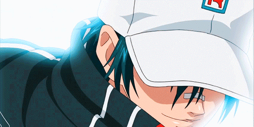
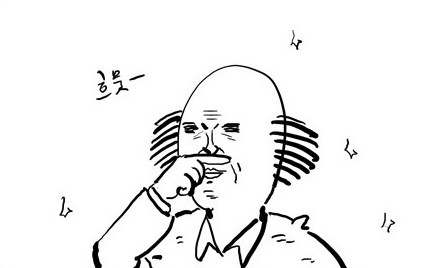
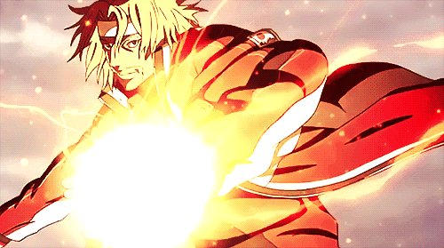

테니스는 네트를 사이에 두고 라켓으로 공을 쳐 넘기고 받으며 득점을 겨루는 경기이다.
테니스 종목은 단식, 복식, 혼합복식 등이 있으며
경기는 포인트-게임-세트-매치 4단계로 이루어진다.
경기를 구성하는 스코어는 0점=0(love), 1점=15(fifteen), 2점=30(thirty), 3점=40(forty)로
4점을 먼저
따낸 선수는 1게임을 얻게 되며 이렇게 6게임을 선취하면 1세트를 이기게 된다.
매치란 승패를 결정짓는
세트 수를 말하며, 5세트 매치에서는 3세트를, 그리고 3세트 매치에서는 2세트를 먼저 얻으면 승자가 된다.
지금부터 임효리의 테니스 완전 정복 일대기를 시작한다.
나는 테니스의 왕자로 테니스를 알게되었다. 멋진 주인공과 화려한 기술들! 테니스에 대한 환상이 가득 찼다. 그렇게 환상을 가진 채로 나는 대학에 오고 테니스 동아리 포스터를 발견하게 되었다. 초보자도 재밌게 칠 수 있다는 문구와 테니스장에서 즐겁게 웃던 선배들 까지. 드디어 나도 만화에서만 봐왔던 테니스를 칠 수있지 않을까, 기대하는 마음으로 동아리에 가입했다.
처음은 긴장감 반. 기대 반. 모든 것이 설레었고 두근거리기 시작했다.
▲테니스의 왕자_주인공 료마
모든 것이 어색하고 몸은 내몸이 아닌 것 같은 기분?
몸은 삐걱거리고 공은 여기저기 날아다녔다. 그 상태로 몇 시간동안 자세연습과 함께 공맞추기 연습만 계속 했는데 그때는 진짜 죽는줄알았다. 처음은 제자리에서 그 다음은 선배가 던지는 공을 맞췄다. 카트에 산더미로 쌓인 공을 다 치고나면 이상한 기분이 들었다. 힘든 건 둘째고 뭐든지 할 수 있을 것 같았는데 땅에 흩어진 공들과 얼얼한 손이 미치도록 뿌듯했다. 그 후 내가 친 몇 십개의 공을 주워 담을 수 있었다...
+
반년 후 자세가 안정되고 선배들에게 인정받기 시작했을 때 난타를 시작했다. 난타는 룰과 상관없이 공을 주고받는 자유로운 게임인데 실력차이 때문에 고생했지만 가장 공에 익숙해지는 방법이었다. 나는 이 방법으로 점점 공을 잘 치기 시작했고 그때부터 파워풀한 막내라고 불리기 시작했다.
나도 어느샌가 짬밥이 늘었다. 대학교 2학년이 됐고 알려주던 선배들이 졸업했다. 테니스에 익숙해져 저녁마다 친구들과 테니스를 치기 시작했고 점점 무작정 열심히 쳤던 과거와 달리 고급기술들을 터득하기 시작했다.
포핸드 다음에 배우는 백핸드, 백핸드 다음에 배우는 여러 타법들. 처음은 언제나 힘들었지만 배우면 배울수록 욕심이 났고 더 잘 치고 싶었다. 많은 연습 덕에 이제는 대부분의 공을 칠 수 있게 됐고 내 생각대로 공을 보낼 수 있게 되었다. 상대편을 이길 확률이 늘어났다는 것이다!
뭐든지 할 수 있을 것 같았다. 모든 공아 여기로 모여라 같은 느낌이랄까.
이제 잘 칠 수 있을 줄 알았던 테니스. 그러나 어느순간부터 실력이 퇴보되기 시작했다. 왜 그랬을 까. 공이 안보이고 몸이 다시 몸치로 돌아간 기분이었다. 2학년 2학기를 지나던 시점. 과제에 치여 살며 몇 번 테니스를 안 쳤던 것 뿐인데 이렇게 돼버렸다.
복학한 선배들은 내가 테니스를 못친다고 생각했고 나는 억울함과 본때를 보여주자는 각오를 다졌다. 매일 테니스를 열심히 쳤고 그제서야 다시 테니스에 익숙해졌다. 취미이자 스트레스 해소법이었던 테니스가 어색하다니. 다시 익숙해지기 까지의 시간과 안 좋았던 습관들을 고치기 까지. 많이 힘들었지만 덕분에 나의 팁이 생겼다.
그 때 나의 팁을 간단히 써보자면...
간단하지만 무척 도움이 된 팁들이었다. 선배들이 알려주신 것과 나의 단점을 고치려 한 것.
이후로는 항상 의식하며 치고 더욱 잘 치기 위해 노력 중이다.
3학년이 되고, 꾸준한 레슨과 연습을 통해 대부분의 공을 칠 수 있게 되었다. 하면 할 수록 테니스를 더욱 즐길 수있게 되었고 나의 테니스가 확립되기 시작했다. 테니스를 칠 때엔 언제나 한 가지 생각을 한다. ‘자신감을 가지자!’ 대부분의 활동이 그렇겠지만 특히 테니스는 자신감을 갖고 크게 휘둘러야 제대로 된 게임의 재미를 알 수 있는 스포츠인 것 같다. 처음 쪼렙 시절에는 느끼지 못한 테니스의 묘미를 이제는 점점 누릴 수 있게 되며 지금의 나는 건강한 자신감에 대해 배워가고 있다.
아직 테니스 만렙은 아니지만 즐기는 것 만큼은 만렙이다! 앞으로도 이렇게 즐겁게 테니스를 치면서 나의 생활에 활력을 불어넣고 싶다.
그리고 이건 여담이지만... 사실 테니스의 왕자는 스포츠물이 아니라 판타지물이였다고 한다.
[임효리의 테니스 완전 정복 일대기 끝]